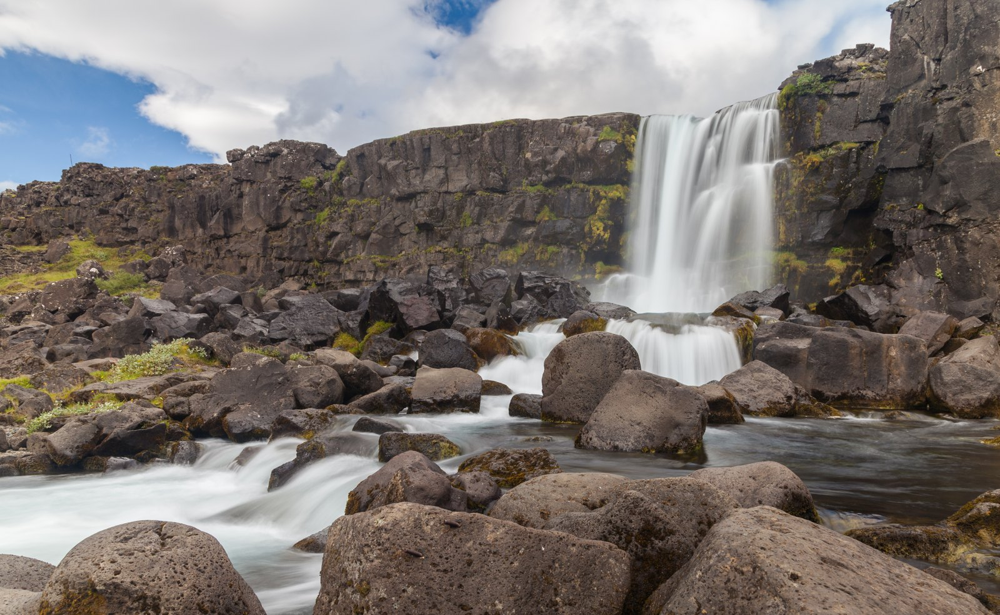
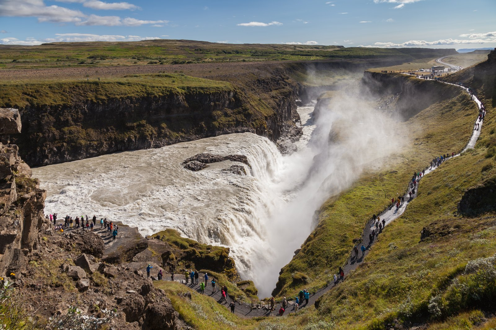
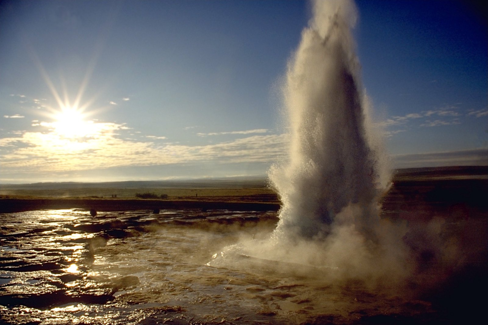
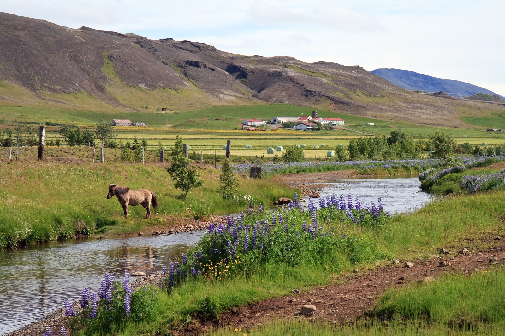
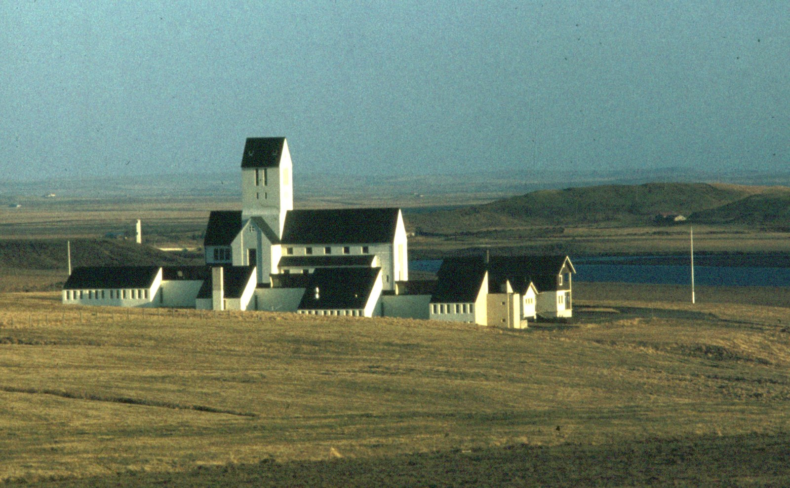
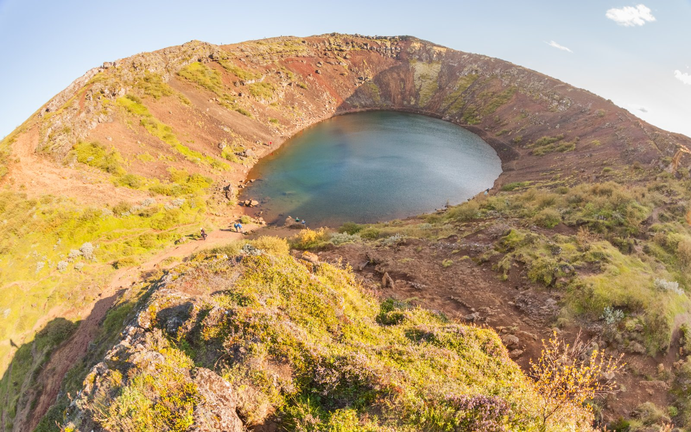

ÍSLAND · NÁTTÚRA · SAGAEin leið.
64°15′ N · 21°07′ V / ÞINGVELLIREin leið.
Ótal upplifanir.
Uppgötvaðu Gullna hringinn. Frá sögufrægum völlum til iðandi hvera og stórbrotinna fossa.
Uppgötvaðu staðinaÞað þarf ekki að fara langt
til að upplifa eitthvað stórt.
Gullni hringurinn er ein þekktasta ferðaleið Íslands. Hér mætast náttúruöfl, íslensk saga og kyrrð sveitarinnar. Við höfum tekið saman sex staði sem gera ferðina eftirminnilega.
SEX STAÐIR · EIN FERÐ
Viðkomustaðirnir
Veldu þinn næsta áfangastað ↙


03
Jarðhiti · Haukadalur
Geysir
Jarðhitasvæðið í Haukadal er kennt við Geysi, hverinn sem gaf goshverum víða um heim nafn.
Skoða staðinn
04
Menning · Mosfellsdalur
Gljúfrasteinn
Gljúfrasteinn í Mosfellsdal var heimili Halldórs Laxness og fjölskyldu hans.
Skoða staðinn
05
Saga · Biskupssetur
Skálholt
Skálholt var um aldir eitt helsta vald-, mennta- og menningarsetur Íslands.
Skoða staðinn